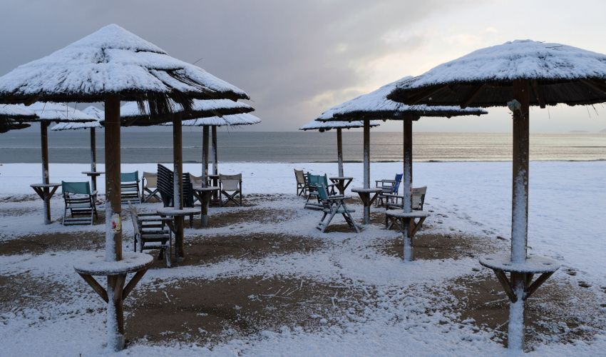

Hoogseizoen vs winter
Hoogseizoen loopt van eind april/mei tot begin november. Vanaf november vertrekken de laatste chartervluchten en wordt Kos zo goed als leeg. Bereikbaar via binnenlandse vluchten (Athene) of veerboot (ca. 10–12 uur).